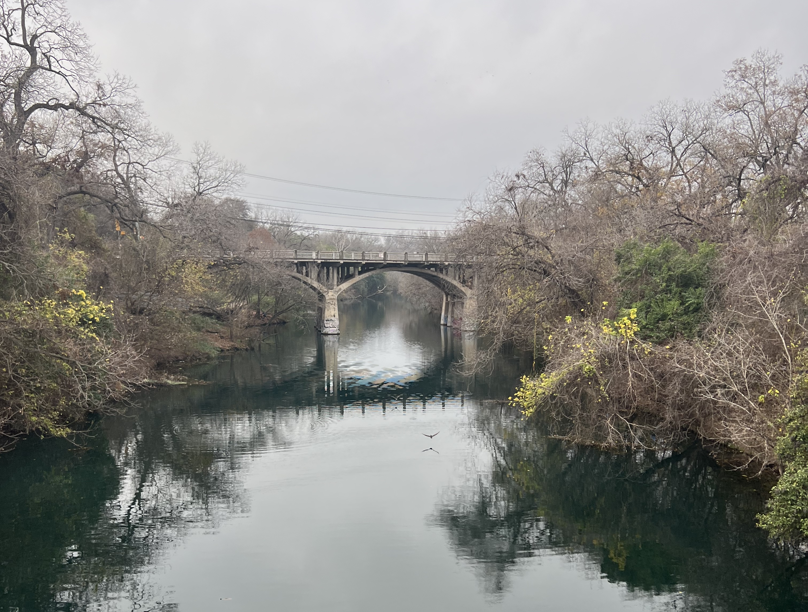

Hello! I am finally posting in the blog!
I set up this website in the spirit of the early 00s Internet, trying to be as simple and fun and DIY as possible. Making regular website updates and monthly zines was an idea that sat in my head all last year. Now the New Year has rolled around again, and if I want to make it happen I think I simply have to do it quickly, and imperfectly, and cumulatively, and post the first things that come to mind.
In that vein, my plan is to make weekly posts (somewhere between a newsletter and a journal) of my extra-curricular creative projects, so I can start sharing things- honing my style and hopefully talking to someone, rather than just doodling away on projects by myself. This site is PRETTY OUTDATED and I would like to populate it with recent stuff (drawings, planner pics, songs I can play now on guitar) that I’m more proud of. Hopefully doing a small blog update and sharing one thing I’ve made each week will make that happen.
We’ll see!! I may get totally derailed by this year. I have promised quite a bit: finishing my thesis, moving, deciding on my next steps in life. But I do want “making and sharing mediocre art” to be a part of that. So that’s what I am hopefully committing to!
If you would like me to mail you physical copies of whatever zines I do or don’t make, you can go back to the home page and give me your address. I’m not sure exactly what the format will be? Probably a few pages of drawings and research on a topic I would like to rant about. Probably I will talk about folklore! Or the historical context around boy bands! Give me suggestions!
(I think) I have set up an rss feed for this blog page at monicascoolsite.com/feed. I will also link my blog updates from my ko-fi page- you can follow without paying anything and it will email you when I update, if you’re interested in that!
I assume if you’re on this site you already have my contact info in some way- I would love feedback and advice on this project! And also just to hear from you!
<3, Monica
